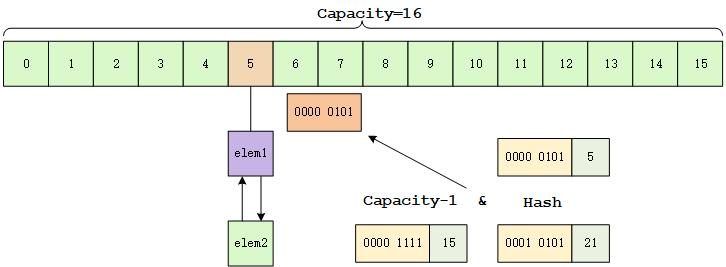
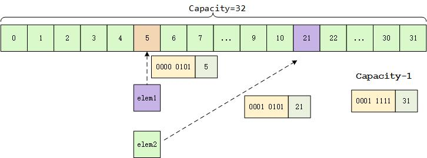

JDK源码之HashMap扩容
次访问
本文聊聊 HashMap 的扩容机制。
扩容机制：
确定好扩容后的容量
newCap和扩容阈值newThr：使用伪代码描述如下：
1 | if oldCap > 0: |
总体来说，就是根据旧有的容量变量oldCap和扩容阈值oldThr更新。
主要分为两种情况：
- 初始化时默认值
- 正常情况下，默认都乘以
2作为扩充方式 - oldCap 为0，但是 oldThr 不为0的情况
确定好新的容量和阈值后，就要开始构造新的位桶，并开始将原来的位桶拷贝到新的位桶。
1
2Node<K,V>[] newTab = (Node<K,V>[])new Node[newCap];
table = newTab;遍历 oldTab 中取到元素后判断该位置的元素下面是不是一个链表或者一棵树，如果该位置只有其一个元素，则将其重新映射到位桶的新位置中：
1
2
3
4
5
6
7Node<K,V> e;
if ((e = oldTab[j]) != null) {
//oldTab 中的元素置空，便于回收
oldTab[j] = null;
if (e.next == null)
//重新映射一个位置
newTab[e.hash & (newCap - 1)] = e;如果下面挂的是一棵红黑树，则分裂到新的位桶数组中，split 方法我们回过头来再看，此处按下不表。
1
2
3else if (e instanceof TreeNode)
//如果下面挂的是一棵红黑树，则分裂
((TreeNode<K,V>)e).split(this, newTab, j, oldCap);如果下面挂的是一个链表，此时会出现一个问题：
原来数组 index 下挂的链表，由于扩容后，会有链表中的部分元素的位置发生变化（因为 index 映射规则是不变的）。
举一个例子：
如图所示，假设 elem1 的 hashcode 的二进制表示为：0000 0101，elem2 的 hashcode 的二进制表示为：0001 0101。扩容前数组的大小为
16，由于 capacity - 1 的二进制表示为：0000 1111，所以采用 hashcode & （capacity - 1）的映射规则，它们都会映射到 index 为5的位置。扩容后数组的大小变为
32，此时 capacity -1 的二进制表示为：0001 1111，依旧采用原来的映射规则，此时 elem1 映射的位置不变，而elem2则会被映射到下标为21的位置。所以这里就涉及到了一个问题：在新位置上挂的链表仍然要保持原来的相对顺序不变。
代码中使用了 e.hash & oldCap 进行判断，如果该值为 0，说明是不需要变更位桶下标的元素，反之，则是需要更改位置的元素。
在实现层面上，使用了四个指针实现：loHead、loTail 指向了不需要变更位桶下标的链表的头尾；hiHead 和 hiTail 指向了需要变更位桶下标的链表的头尾。
1
2
3
4
5
6
7
8
9
10
11
12
13
14
15
16
17
18
19
20
21
22
23
24
25
26
27
28
29
30Node<K,V> loHead = null, loTail = null;
Node<K,V> hiHead = null, hiTail = null;
Node<K,V> next;
do {
next = e.next;
if ((e.hash & oldCap) == 0) {
if (loTail == null)
//链表为空，初始化链表头
loHead = e;
else
//插到队尾
loTail.next = e;
loTail = e;
}
else {
if (hiTail == null)
hiHead = e;
else
hiTail.next = e;
hiTail = e;
}
} while ((e = next) != null);
if (loTail != null) {
loTail.next = null;
newTab[j] = loHead;
}
if (hiTail != null) {
hiTail.next = null;
newTab[j + oldCap] = hiHead;
}现在可以回头看看 TreeNode 的 split 方法发生了什么，其核心思路与转移链表的思路一样，将需要更改位桶下标的元素移动到另外一个下标处，并保持指针不变：
1
2
3
4
5
6
7
8
9
10
11
12
13
14
15
16
17
18
19
20for (TreeNode<K,V> e = b, next; e != null; e = next) {
next = (TreeNode<K,V>)e.next;
e.next = null;
if ((e.hash & bit) == 0) {
if ((e.prev = loTail) == null)
loHead = e;
else
loTail.next = e;
loTail = e;
++lc;
}
else {
if ((e.prev = hiTail) == null)
hiHead = e;
else
hiTail.next = e;
hiTail = e;
++hc;
}
}可以看到此处与前面相比，多了两个统计变量：lc 和 hc。这两个变量用来干什么呢？
HashMap 有一个特性就是：一旦链表长度超出某个阈值，则将其转换为一棵红黑树，一旦树中元素个数小于某个阈值，则将其退化为链表。
所以我们接着看后面：
1
2
3
4
5
6
7
8
9
10
11
12
13
14
15
16
17
18if (loHead != null) {
if (lc <= UNTREEIFY_THRESHOLD)
tab[index] = loHead.untreeify(map);
else {
tab[index] = loHead;
if (hiHead != null) // (else is already treeified)
loHead.treeify(tab);
}
}
if (hiHead != null) {
if (hc <= UNTREEIFY_THRESHOLD)
tab[index + bit] = hiHead.untreeify(map);
else {
tab[index + bit] = hiHead;
if (loHead != null)
hiHead.treeify(tab);
}
}所以重点在于两个方法：untreeify 和 treeify。
关于红黑树转链表和链表转红黑树的方法，此处先不表。
（全文完）